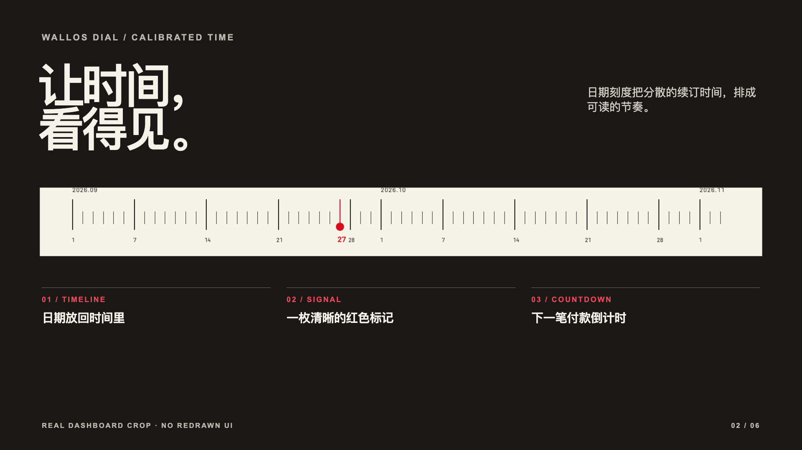
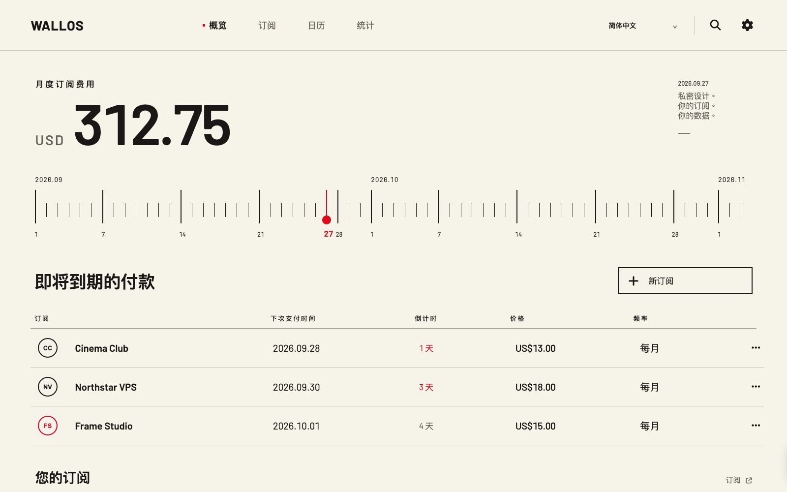
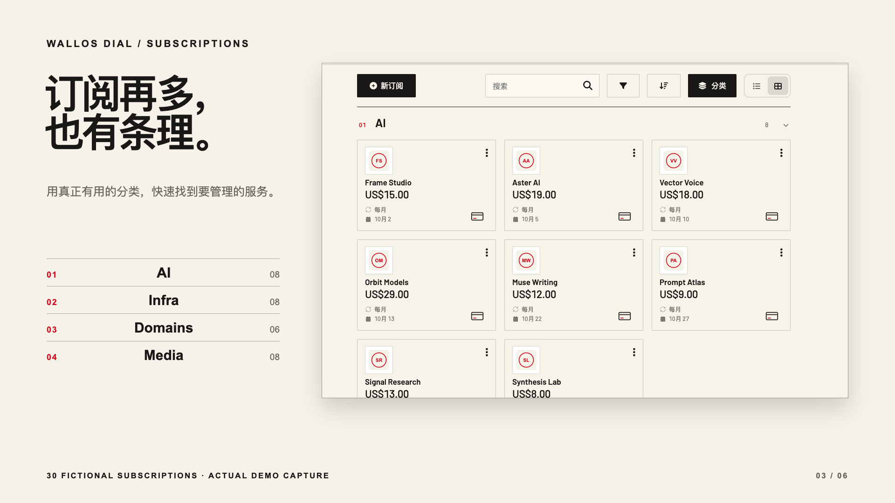
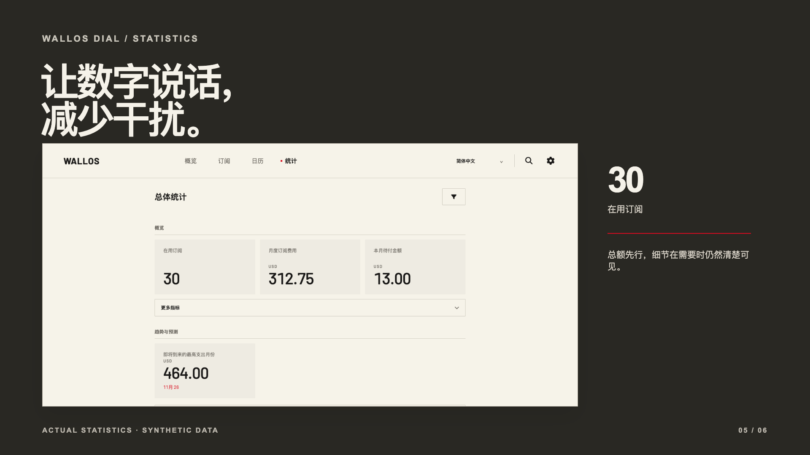

1.0 候选版 · 目标 Wallos 5.8.3 · 尚未发布
看清每一次续订。
Wallos Dial 是为 Wallos 独立开发的桌面主题。1.0 候选版新增分类管理与图标选择，保留熟悉的操作流程；目前已公开的镜像与 Demo 仍为 0.1.1。下方界面图片是使用虚构数据制作的 0.1.x 历史截图。

1.0.0本地发布候选版，尚未发布
5.8.3目标 Wallos 版本
0.1.1当前公开 Demo
设计思路
持续支出，有了清晰的节奏。
暖白底、黑色数字、精确日期刻度和少量红色，贯穿整个桌面界面。



真实应用 · 虚构记录
安装之前，先自己体验。
在线 Demo 运行基于 Wallos 5.8.1 的 Wallos Dial 0.1.1 PHP 应用，包含 30 条虚构订阅。公开环境只读；可以浏览总览、分类订阅、日历、统计和语言切换。1.0 的分类管理页与图标选择器目前仅在本地候选版可用，仍待发布及 Demo 更新批准。
保留原有能力
熟悉的 Wallos，新的阅读体验。
自行部署
先核对，再切换。
Dial 1.0 仍是本地候选版，正式 GHCR 镜像尚未提供。使用现有 Wallos 数据库前，先备份数据库与 Logo 数据卷，并在隔离副本上排练迁移与回退。
中文升级与回退说明 ↗当前公开镜像是基于 Wallos 5.8.1 的 Dial 0.1.1。仓库 README 说明如何在隔离实例本地构建 1.0 候选版。经审查的正式镜像发布后，这里才会提供直接拉取的安装命令。
常见问题
切换前需要知道的事。
这是 Wallos 官方主题吗？
不是。Wallos Dial 是独立开发的 GPLv3 源码叠加层，构建为 Docker 镜像；它不隶属于 Wallos 项目，也不是应用内置的主题选项。
Wallos 更新后会自动兼容吗？
不会。1.0 候选版目标适配 Wallos 5.8.3；已公开的 0.1.1 验证于 Wallos 5.8.1。新的上游版本仍需兼容检查和经过测试的 Dial 镜像。
在线 Demo 可以修改数据吗？
不能。当前 0.1.1 Demo 只读，包含 30 条虚构订阅。分类管理页和图标选择器属于尚未发布的 1.0 候选版；获批更新 Demo 后，分类管理页也只供查看。
已有的 Logo 会丢失吗？
Dial 会保留 Wallos 原有的 Logo 文件，选择「原图」即可恢复。「我的图标」保存在 SQLite 数据库，所以升级前要同时备份数据库和 Logo 数据卷。
切换语言会翻译订阅名称吗？
界面标签会切换语言；用户填写的名称和备注会保留原文。